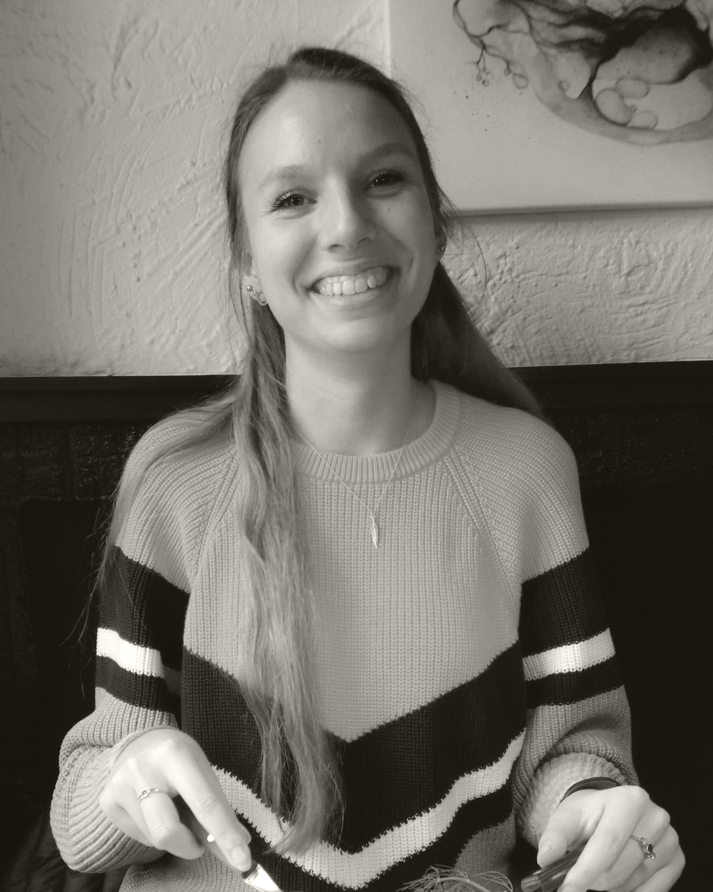

Jeg er en 21 år gammel og kommer fra Svendborg på sydfyn. Jeg bor til daglig i Lyngby, hvor jeg har boet de sidste 2,5 år sammen med min kæreste.
I 2012 startede jeg på HHX i Svendborg og blev færdig sommeren 2015, hvorefter jeg arbejdede 6 måneder på en chokoloade fabrik som jeg havde arbejdet på gennem hele min studie tid. Da de 6 måneder var gået Flyttede jeg til Lyngby hvor jeg begyndte at arbejde i Matas, indtil jeg skulle starte på Finansbachelor uddannelsen. Der gik jeg i et år inden jeg fandt ud af at det ikke var det rette for mig. Jeg havde i mellem tiden fået studie job hos Peak Performance, hvorefter jeg gik over på fuldtid indtil jeg igen kunne starte på studie.
